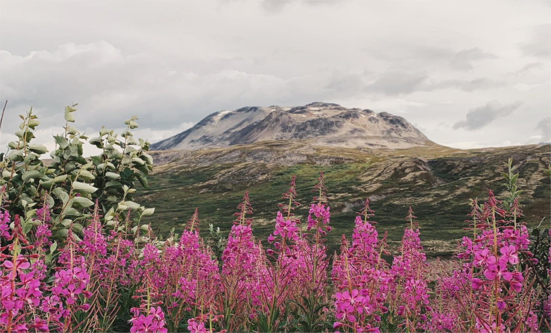

{kind=link}

Macroscale Responses to Global Change
Detecting signals of global change in boreal and tundra butterfly communities using data from museums and community science platforms in tandem with advanced modeling approaches.

Detecting signals of global change in boreal and tundra butterfly communities using data from museums and community science platforms in tandem with advanced modeling approaches.
Using targeted field work and museum specimen photographs to assess behavior, morphological variation, and population dynamics of the butterfly Parnassius smintheus.
| Shirey, V., M. Belitz, V. Barve, R. Guralnick. 2020. "A complete inventory of North American butterfly occurrence data: narrowing data gaps, but increasing bias." Ecography. | |
| Shirey, V., S. Seppälä, V.V. Branco, P. Cardoso. 2019. "Current GBIF occurrence data demonstrates both promise and limitations for potential red listing of spiders." Biodiversity Data Journal. | |
| Cardoso, P.,V. Shirey, et al. 2019. "Globally distributed occurrences utilised in 200 spider species conservation profiles (Arachnida, Araneae)." Biodiversity Data Journal. | |
| Shirey, V. 2018. "Visualizing natural history collection data provides insight into collection development and bias." Biodiversity Data Journal. | |
| Seltmann, K., S. Lafia, D. Paul, ... V. Shirey, et al. 2018. "Georeferencing for Research Use (GRU): An integrated geospatial training paradigm for biocollections researchers and data providers." Research Ideas and Outcomes. |